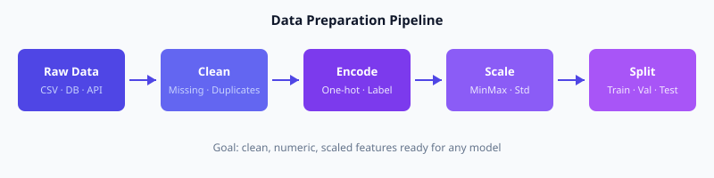
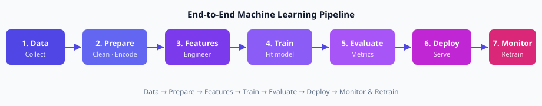

Module 3 — Data Pipeline
Data Preparation · Feature Engineering · Data Analysis · Cloud Data Engineering
Why this module matters
Models are only as good as the data they see. In industry, 60–80% of an ML project is spent preparing data. This module teaches the exact steps: collect → clean → transform → encode → scale → split → pipeline.

Data preparation flow: Raw → Clean → Encode → Scale → Split
1. Data collection
Sources: CSV files, databases, APIs, sensors, logs, surveys. Always record where the data came from and when.
2. Data cleaning — numerical example
Tiny student marks table (before cleaning):
Name | Math | English | Age
Ali | 78 | 82 | 17
Sara | | 90 | 16 ← missing Math
Ali | 78 | 82 | 17 ← duplicate
Bilal | 55 | 40 | -1 ← invalid age
Fatima | 92 | 88 | 18Actions:
- Remove exact duplicate row (Ali appears twice).
- Missing Math for Sara → impute with mean of Math column: (78+55+92)/3 = 75.
- Age = −1 is impossible → set to median age of valid rows, or drop the row.
Math scores present: 78, 55, 92. Mean = (78+55+92)/3 = 75.
After cleaning:
Name | Math | English | Age
Ali | 78 | 82 | 17
Sara | 75 | 90 | 16
Bilal | 55 | 40 | 17 (age fixed)
Fatima | 92 | 88 | 18Encoding & Scaling
Turning text categories and different units into numbers models can use
Label encoding vs One-hot encoding
City column: Lahore, Karachi, Islamabad, Lahore
Label encoding (order matters only if ordinal):
Lahore → 0, Karachi → 1, Islamabad → 2One-hot encoding (preferred for unordered categories):
Lahore Karachi Islamabad
row1 1 0 0
row2 0 1 0
row3 0 0 1
row4 1 0 0Feature scaling — why and how
Height is in cm (150–190), income is in thousands (20–200). Without scaling, income dominates distance-based algorithms (KNN, SVM, gradient descent).
Formula: \( x' = \dfrac{x - x_{\min}}{x_{\max} - x_{\min}} \)
Heights: 160, 170, 180. min=160, max=180
- 160 → (160−160)/(180−160) = 0
- 170 → (170−160)/20 = 0.5
- 180 → (180−160)/20 = 1
Formula: \( z = \dfrac{x - \mu}{\sigma} \)
Same heights: 160, 170, 180. Mean μ = 170. Std ≈ 8.16
- 160 → (160−170)/8.16 ≈ −1.22
- 170 → 0
- 180 → +1.22
Data Engineering with Cloud
BigQuery · Dataflow · Cloud storage patterns
Where data lives in the cloud
- Cloud Storage — raw files (CSV, Parquet, images)
- BigQuery — analytical warehouse; SQL + BigQuery ML
- Dataflow — batch and streaming transforms (Apache Beam)
Typical cloud data path
- Upload raw CSV/JSON to a Cloud Storage bucket
- Load or federate into BigQuery
- Clean and join with SQL (or Dataflow for heavy transforms)
- Export clean features to a training table or TFRecord
- Train on Vertex AI using that table
Data Pipelines — ETL, Batch & Stream
Extract · Transform · Load · Automation

Full ML pipeline — data preparation is steps 1–3
ETL in one sentence
Extract data from sources → Transform it (clean, join, aggregate) → Load into a destination (warehouse or feature store).
Batch vs Stream
- Batch — process a whole file or table once per hour/day (nightly sales report).
- Stream — process each event as it arrives (fraud score on every transaction).
Automation
Use schedulers (Cloud Composer / Airflow, Cloud Scheduler) so the same cleaning and feature jobs run every night without manual clicks.
After Min-Max scaling, every feature value lies in which range?
Module 3 — Key takeaways
- Clean missing values, duplicates and invalid entries before any modelling.
- Encode categories (one-hot for unordered) and scale numeric features when needed.
- Cloud path: Storage → BigQuery / Dataflow → clean features → Vertex AI.
- ETL + scheduling turns one-off scripts into reliable pipelines.